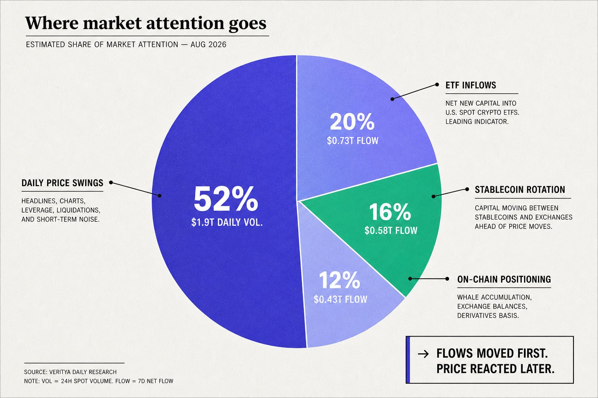
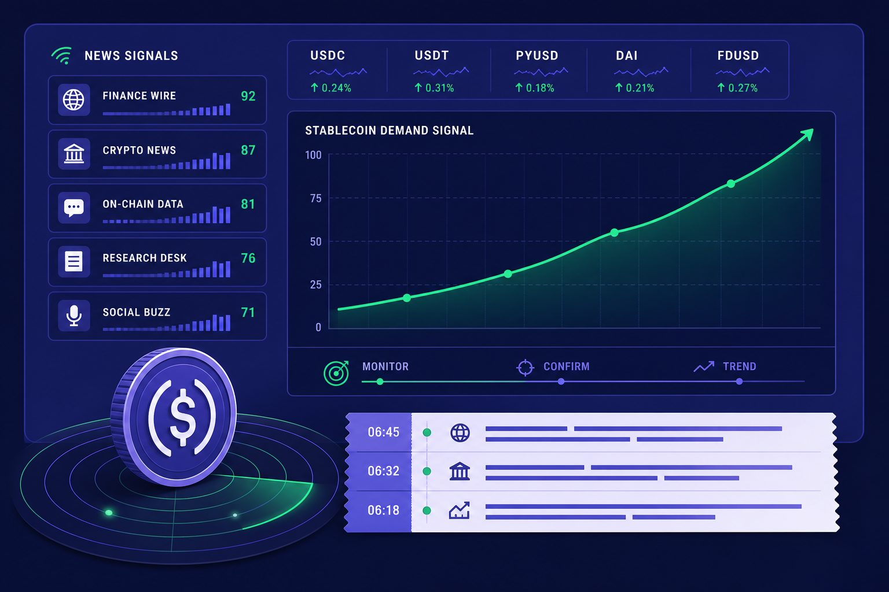
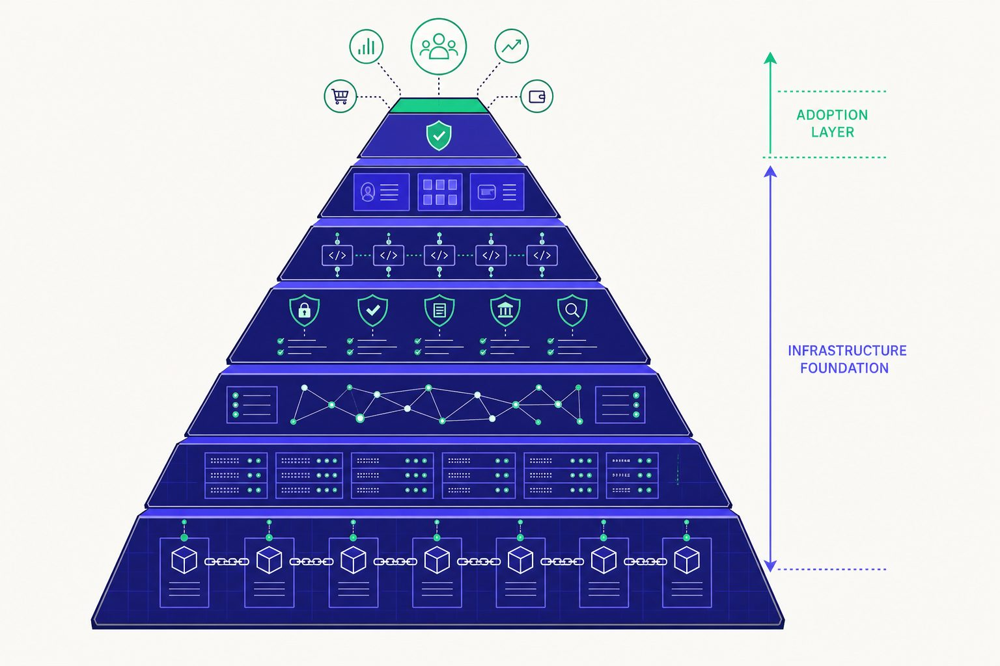
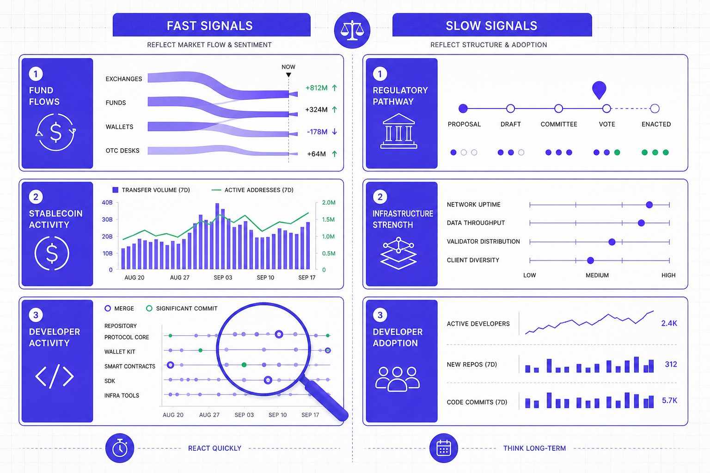

Crypto Analysis
5 Crypto ETF Signals That Matter More Than Charts Today

What affects a crypto ETF besides price action? More than most charts admit. Crypto ETF analysis gets sharper when it starts with regulation, flows, stablecoins, infrastructure, and developer activity. Candles can show momentum, but they rarely show whether demand is real, durable, or backed by market structure. That gap matters now, as crypto news moves faster than most narratives can keep up. CoinDesk tracks how small positioning changes can signal meaningful shifts in market sentiment. Data from Yellow shows how little signal survives noisy markets, where most tokens fail to gain traction. This list offers a faster framework for judging major crypto developments. It tracks how sharper observers connect policy, capital, and network health before charts catch up.
Table of Contents
1. Track Crypto Regulation Before Any Bullish Thesis
Why this signal matters
Crypto regulation sets the legal ceiling before capital can scale. It shapes product approvals, custody access, exchange participation, and the risk budget of large allocators. For a crypto ETF, that ceiling matters as much as demand. If rules stay murky, issuers, custodians, and brokers often slow down first.
A simple analogy helps. Price action is the crowd outside a stadium. Regulation is the fire code that decides how many people get in. For example, bullish crypto news can lift sentiment fast, but unclear rules can still block listings, limit distribution, or tighten custody terms. Readers tracking policy context often get a cleaner signal than readers chasing candles alone.
What to watch
Start with SEC decisions and court rulings. Those events shape what products can launch, how disclosures must read, and which assets may face extra scrutiny. Custody standards matter too. If qualified custody rules tighten, access can narrow even during a rally. That is why How to Research Cryptocurrency Market News Before Making Investment Decisions remains useful when headlines turn noisy.
Next, watch listing requirements and cross-border differences. The US may move slowly while the EU advances under a clearer framework. Hong Kong may open paths that the US still debates. Other active markets can do the same. CoinDesk reports that market reactions can look extreme, yet those spikes say little without a policy path.
What can mislead readers
The biggest trap is the vague headline rally. A speech, rumor, or leaked talking point can send prices higher for a few sessions. Then momentum fades when no formal rule, approval track, or enforcement clarity follows. CoinDesk: Bitcoin, Ethereum, XRP, Crypto News and Price Data archives document multiple instances where market excitement over regulatory hints dissipated within days once traders realized no concrete policy had actually changed.
So, can a crypto ETF rise before regulation becomes clear? Yes, briefly. But those moves often lack durability. For example, Why Crypto Prices Move Suddenly (And How to Investigate) explains why traders should separate headline excitement from an actual legal pathway.
2. Follow Fund Flows Instead of Daily Price Drama

Why this signal matters
A crypto ETF flow says more than one loud candle. Price can jump on thin liquidity, leverage, or a single headline. Fund flows show whether actual capital entered or left the trade.
That matters because flows reflect commitment, not excitement. When net creations rise, issuers must source more of the underlying asset. That extra demand can support prices longer than a chart breakout alone.
For example, a token may rip higher after upbeat crypto news. Yet weak fund demand can expose a shaky move. CoinDesk reported that bitcoin slipped 1.1% during one session, even as broader risk assets held up. That kind of split can hint that price action and capital conviction are not aligned.
What to watch
The first item is net creations and redemptions. Creations suggest fresh money arrived. Redemptions suggest money left. Fund flows answer this directly: they create real buy and sell pressure through the ETF structure. When issuers must source more Bitcoin to meet creations, that demand supports prices beyond what a chart shows.
The second item is issuer market share. A healthy trend looks broad. If one product takes all demand, conviction may be narrow. A stronger setup shows several issuers gaining assets over several sessions.
The third item is duration. One strong day can mislead. Multi-day flow trends matter more than one breakout. That is why inflows often matter more than chart signals. For related methods, see How to Analyze Crypto Market Trends in 7 Steps.
What can mislead readers
A rally can still look strong on the surface. Headlines, leverage, and social momentum can push prices fast. For example, CoinDesk: Bitcoin, Ethereum, XRP, Crypto News and Price Data reported that Nasdaq 100 futures rose 0.3% during a period when bitcoin weakened. Divergence like that deserves caution.
Readers should also avoid treating every headline as proof. A crypto ETF with fading inflows can signal fragile momentum under the surface. That risk grows when crypto regulation stays unclear and flows cluster in one vehicle, not the full market.
3. Watch Stablecoin News for Early Demand Signals

Why this signal matters
Stablecoins matter because they move capital fast. They act like payment rails inside crypto markets. When supply expands, fresh buying power may be forming before headlines catch up. That makes stablecoin news useful for reading early demand.
This also matters for any crypto ETF narrative. ETF flows show committed capital. Stablecoins show ready capital still waiting to deploy. For example, rising exchange stablecoin balances can suggest traders are preparing buys, even before spot volumes surge. That context helps separate real appetite from noisy crypto news.
What to watch
The cleanest signal starts with minting and redemptions. New issuance can point to rising demand. Heavy redemptions can show capital leaving risk. Readers should also track stablecoin dominance, exchange deposits, and whether balances are spreading across major venues rather than one isolated platform.
Breadth matters more than a single headline. If stablecoin growth appears across exchanges, majors, and active trading pairs, participation looks healthier. If growth stays trapped on one venue, the signal weakens. For a broader framework, How to Analyze Crypto Market Trends in 7 Steps gives helpful context.
Stablecoin flows often give a steadier read than one sharp price burst. While CoinDesk and other outlets track individual asset moves - such as sudden volatility from rate hike speculation or altcoin rallies - these snapshots capture moments rather than sustained momentum. CoinDesk frequently reports on such price swings, but they can reflect narrative shifts more than underlying capital commitment. Watching stablecoin supply and exchange flows provides a more consistent signal of market participation over time.
What can mislead readers
Not every supply increase is bullish. Some issuance reflects treasury shuffling, exchange inventory needs, or movement between venues. For example, a desk may mint stablecoins for settlement, not for new speculation. A venue may also attract deposits because traders want safety, not upside.
That is why readers should test stablecoin growth against broad participation. If alt volumes stay thin, onchain activity stalls, and deposits cluster on one venue, the message changes. In that case, supply growth may reflect rotation, not expansion. Readers who want a sharper filter can pair this with Why Crypto Prices Move Suddenly (And How to Investigate).
4. Judge Infrastructure Strength Before Believing Adoption

Why this signal matters
A crypto ETF story can look strong on paper. It still fails if the plumbing stays weak. Real adoption needs blockspace, custody, settlement rails, brokers, and exchanges that work under stress.
That is the core question behind infrastructure strength. What infrastructure supports a crypto ETF market? It includes secure custodians, reliable creation and redemption systems, deep exchange liquidity, stable settlement, and market makers that can keep spreads tight.
For example, a fund can attract headlines fast. If creations slow during congestion, enthusiasm hits an operational ceiling. In that case, price excitement says less than execution quality. That is why solid infrastructure matters in serious crypto news coverage.
What to watch
Readers should track custody integrations first. A crypto ETF depends on custodians, prime brokers, authorized participants, and trading firms moving assets without delay. If one link breaks, the full chain weakens.
Settlement reliability also matters. Watch whether transfers clear on time, whether exchange outages rise, and whether spreads widen during busy sessions. Thin execution often shows up before narratives change.
Network congestion and fee stability matter too. For example, rising demand can clog settlement paths just when flows increase. Stablecoin news can help here, because payment rails and exchange balances often reveal whether liquidity can move cleanly.
Institutional support is another useful test. Strong broker access and active market makers usually signal better execution. Data indicates even small market shifts can affect sentiment, as CoinDesk noted a 0.21% move in its crypto stock coverage (CoinDesk: Bitcoin, Ethereum, XRP, Crypto News and Price Data).
What can mislead readers
Marketing partnerships often sound bigger than they are. A launch announcement does not prove strong custody, low slippage, or reliable settlement. Readers should focus on verifiable infrastructure metrics rather than promotional headlines that may overshadow operational concerns.
That is why readers should test claims against execution. How to Research Cryptocurrency Market News Before Making Investment Decisions offers a useful framework. So does Why Crypto Prices Move Suddenly (And How to Investigate).
The Better Crypto ETF Verdict

The article’s core lesson is simple. A crypto ETF story deserves more than a chart check. Strong analysis starts with structure, not sentiment. That means checking the legal path, the capital behind the move, the liquidity base, the market plumbing, and the builder activity that keeps a network moving forward.
Developer activity matters because it tests whether a story still has working parts. A network with steady core commits, repeat contributors, regular releases, and better tooling shows ongoing effort. That does not guarantee adoption. It does show that the asset is still being improved in ways that can support broader use over time. For any long-range thesis tied to a crypto ETF, that is a far stronger signal than social momentum alone.
Still, this signal needs discipline. Raw commit counts can be padded. Forked repositories can create noise. Hackathon bursts can look impressive, then disappear. The better read comes from consistency. If builders keep shipping useful upgrades, improving wallets, exchanges, SDKs, and app support, the narrative has more substance. If activity clusters around headlines and fades fast, caution makes more sense.
The table below compares five key signals across four dimensions:
| Signal | Speed | Reliability | Short-Term Use | Long-Term Use |
| Regulation | Slow | Very high | Medium | Very high |
| Fund flows | Fast | High | Very high | High |
| Stablecoin activity | Medium-fast | Medium | High | Medium |
| Infrastructure strength | Medium | High | Medium | High |
| Developer activity | Slow-medium | Medium-high | Low | Very high |
The ranking shows why no single input is enough. Regulation is the first filter because it sets the outer boundary of what can happen. Flows are the best confirmation because they show real money taking risk. Stablecoin news helps spot early demand shifts. Infrastructure shows whether the market can support scale. Developer activity is the best late-stage conviction check because it reveals whether the network is still earning belief after the headlines cool.
Readers who use this framework can judge crypto news with more patience and less noise. That habit will likely matter even more as the next crypto ETF cycle matures. Want to learn more? Learn More to explore how we can help.